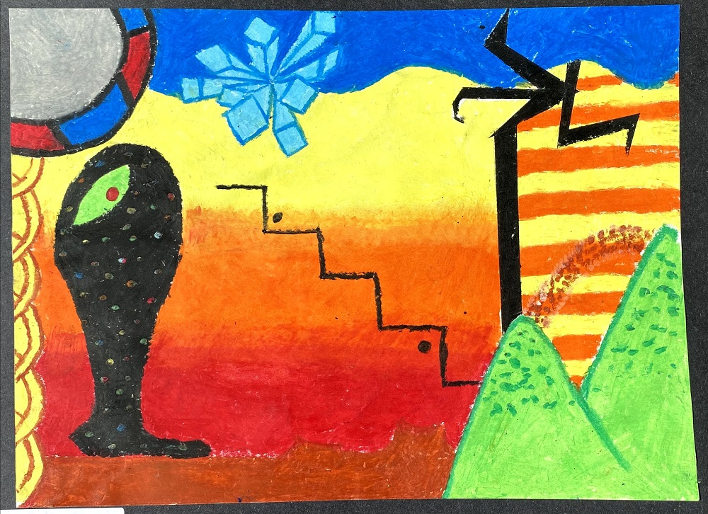

Yume Nikki
Like everyone else on the internet, I downloaded Yume Nikki when I was in middle school, and it changed the chemical composition of my brain permanently. I don't remember exactly how I discovered it because that was about a decade ago. I do know that in the early 2010's, I was really big on "Doujin Games", so it was probably through that? The Touhou-to-Yume Nikki pipeline. From there I started frequenting Uboachan and got into the general fanworks of YN.
The series and all the fangames have been a constant presence in my life. I remember in high school French class, I had to make a poster for an assignment, and I put a sketch of Madotsuki in it. I did a redraw of it very recently! If I had to guess, there's an 8-year difference between these images.
{kind=link}
When I was in Freshman art class, we had to make a drawing of something "surreal". Naturally, I made Yume Nikki fanart. This was supposed to be the the Mars portion of the game. Looking back at this, I think I subconsciously plagiarized Person Throwing a Stone at a Bird by Joan Miró (apologies to Mr. Miró).

I haven't read the manga, but I remember seeing the announcement for it in study hall... the teacher got mad at me for using my phone, but I had to text my siblings after hearing the news. I was the only one that played it, but we used to have brainstorm sessions for our own fangame.
Recommendations + DL
(I am assuming you already know the big ones like Yume 2kki and .flow)
This page is a WIP! Check back later. You can return to the sitemap here.